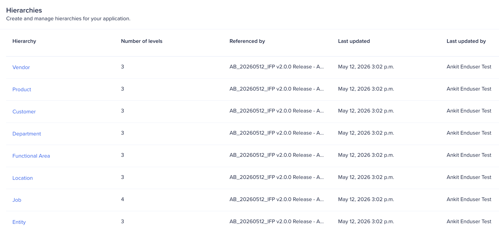
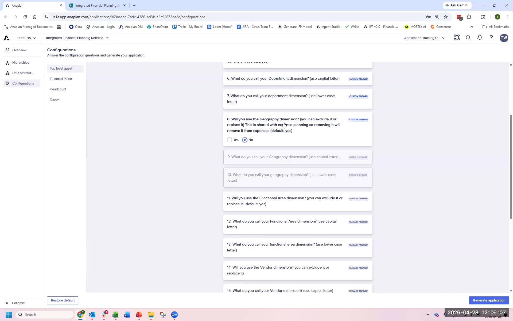
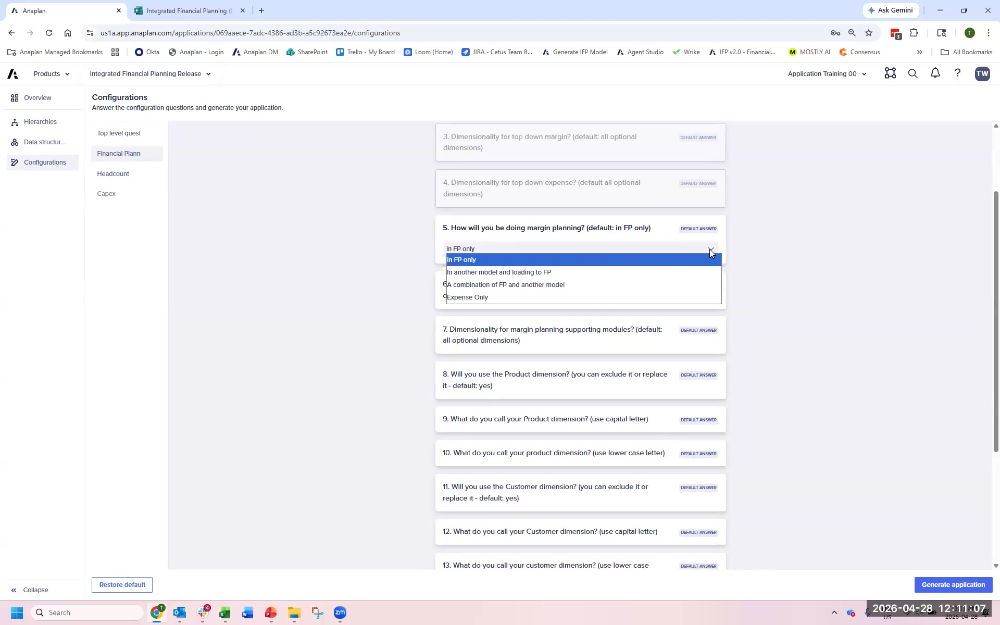
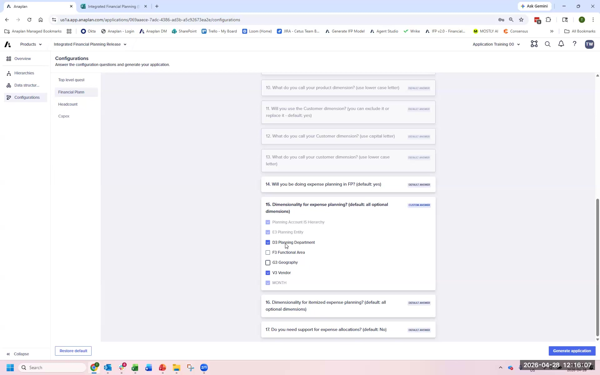
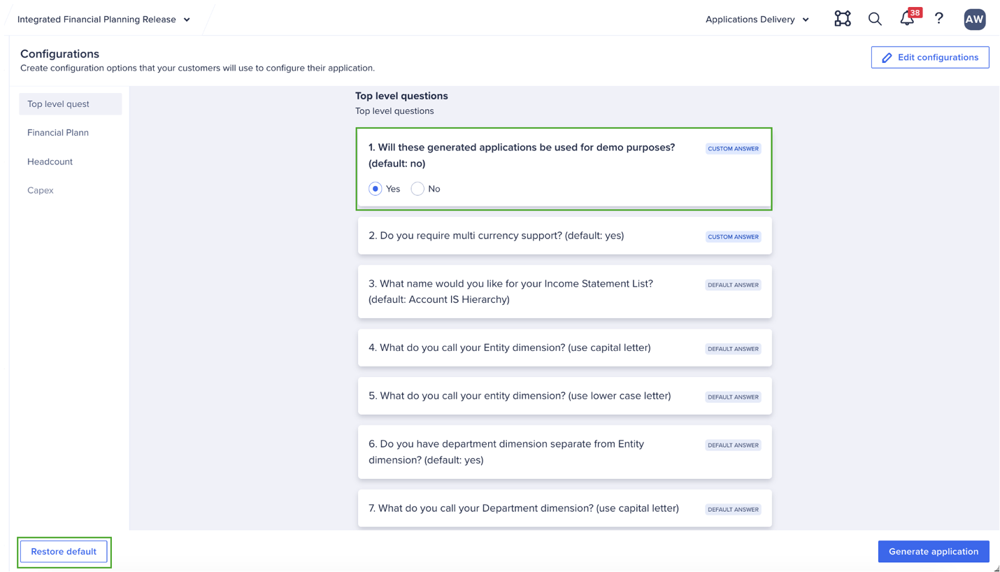
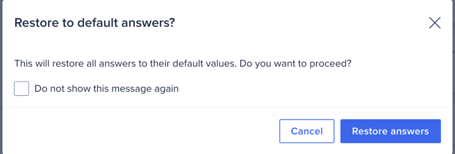

App Framework Configurator
What the configurator controls and how to navigate all 44 configuration questions
What the Configurator Is
The App Framework configurator is the single interface for all IFP configuration decisions. It presents 44 configuration questions across three categories: top-level questions (23), financial planning configurations (17), and headcount configurations (3), plus additional settings. The answers to these questions determine what gets generated — module structure, list hierarchies, formula logic, and planning method availability.
The configurator is accessed via a specific URL: navigate to anaplan.com/applications (not through the normal workspace navigation, which doesn't yet show the Applications link in v2.1.0). As the app reaches general availability, this link will appear in the standard navigation.
Before making any configuration changes, generate the application with all default settings first. This gives you a base copy — a model where all formulas generated correctly, with default hierarchy names and default dimensions intact. If you later get a formula error in your configured generation, you can look up the correct formula in the base copy and copy it over. Label this generation clearly (e.g., “Base — no changes”).
Once you trigger generation, many structural decisions cannot be changed without regenerating the model. Hierarchy levels, entity structure, and geography configuration must be locked before generation. Get these right at Session Zero — they are the hardest things to change later.
Configurator Overview (v2.1)

Configuration Sections
Hierarchies
The Hierarchies section defines the dimension structure of the generated model. Decisions made here cascade through every module and cannot be changed post-generation without a full regeneration.
- Location: How many levels? (e.g., Global → Region → Country → City). Which levels are planning levels vs. roll-up only?
- Functional Area: Which functional areas are in scope? (Gross Profit, OpEx, Headcount, Balance Sheet). Each enabled area generates additional modules.
- Entity: How many entity levels? What is the top-level consolidation entity?
- Product: Is product-level planning required? Product hierarchy levels?

Top-Level Questions (22 Questions)
The top-level questions are the most impactful. They define the structural skeleton of the IFP model.
| Question Area | What It Controls | FintechCo Answer |
|---|---|---|
| Entity Levels | How many entity hierarchy levels in the model | 3 (Group → Region → Entity) |
| Department/Functional Area | Functional area structure and planning scope | 4 areas enabled |
| Location | Location levels included in planning dimensions | 2 levels (Region → Country) |
| Base Currency | Functional currency for the workspace | GBP |
| Transactional Currencies | Additional currencies for entity-level planning | USD, EUR |
| Planning Period | Monthly, quarterly, or weekly planning granularity | Monthly |
| Fiscal Year Start | First month of the fiscal year | January |
| Planning Horizon | How many months of planning periods to generate | 24 months |
| Balance Sheet | Is balance sheet planning in scope? | Yes |
| Revenue Planning | Driver-based or direct input revenue planning? | Driver-based |

Financial Planning Configurations (17 Questions)
Financial planning configurations control the planning methods available, headcount settings, and OpEx behavior. These are less structural than top-level questions but still affect formula generation.
| Configuration Area | Key Decisions |
|---|---|
| OpEx Planning Methods | Which methods are available: Direct Input, Units × Rate, Rolling Moving Average, Custom methods |
| Headcount Planning | Headcount dimensions, planning method defaults, integration with HC model |
| Balance Sheet Configuration | Which balance sheet accounts are in scope, roll-up hierarchy |
| Revenue Configuration | Driver selection, product hierarchy levels, volume × price method |
| Actuals Integration | How actuals data loads into DAT modules — ADO pipeline configuration |

Configuration Questions (v2.1 New Features)

Dimensionality Settings

Key Configurator Nuances (Learned from Delivery)
- Hierarchy name + configurator question must match: In v2.1.0, the hierarchy name in the Hierarchies section and the rename in the Configuration Questions are NOT linked. You must update both. This is expected to be fixed in v2.1.
- No trailing spaces in names: Trailing spaces in renamed hierarchies have caused generation errors. Double-check names don't have spaces before or after.
- Leaf level must stay at the bottom: When removing a level, remove the middle level and keep the leaf at the bottom. When adding a level, the system adds it at the bottom — drag it above the original leaf level. The original leaf cannot be renamed to the same name as the new level.
- Hierarchies and Configuration Questions are separate: There are two questions per renamed dimension — one creates the list, one creates the modules. The second is lowercase. You must update both.
- Restore Default per hierarchy: Each hierarchy has its own “Restore Default” button. A master reset of all configuration is not yet available (coming in v2.1).
- Order of configurator vs hierarchies: You can complete hierarchies first or configuration questions first — there is no required order.
- Generate CapEx even if not needed now: Polaris modules don’t use significant memory until they contain data. Generate CapEx now to avoid a future regeneration if the customer adds it later.
- Custom dimensions (flat lists) are extensions, not hierarchies: Flat list dimensions (e.g., Channel) are not configured in the Hierarchies section — they are built as extensions post-generation.
Generation Process
After completing all configuration questions and hierarchy settings:
- Click Generate from the App Framework overview
- Enter a description for this generation (e.g., “Base — no changes” or “FintechCo — 3 entity levels, no geography”)
- Select the target workspace
- Generation runs in the cloud — approximately 20–40 minutes. Monitor progress on the main /applications page rather than inside the App Framework (the status indicator inside the framework may lag)
- When complete, all items show green. Items in red are errors. Items in amber are warnings.
- Export the error log for review
Before the Lab
During Lab A, you will configure the App Framework for FintechCo. Review the FintechCo case study profile now and note any configuration decisions that feel ambiguous. The facilitator will answer questions before you begin configuring.